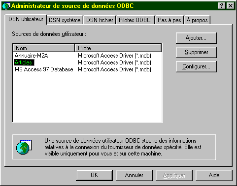

10. بناء التطبيقات الموزعة CORBA
10.1. مقدمة
في الفصل السابق، رأينا كيفية إنشاء تطبيقات موزعة في Java باستخدام الحزمة RMI. نتناول هنا نفس المشكلة، ولكن هذه المرة باستخدام بنية CORBA. CORBA (Common Object Request Broker Architecture) هي مواصفة حددتها OMG (Object Management Group) التي تضم العديد من الشركات في عالم تكنولوجيا المعلومات. تحدد CORBA "ناقل برمجي" يمكن الوصول إليه من قبل التطبيقات المكتوبة بلغات مختلفة:

سنرى أن بناء تطبيق موزع باستخدام CORBA يشبه الطريقة المستخدمة مع Java RMI: فالمفاهيم متشابهة. يتميز CORBA بميزة قابلية التشغيل البيني مع التطبيقات المكتوبة بلغات أخرى.
10.2. عملية تطوير تطبيق CORBA
10.2.1. مقدمة
لتطوير تطبيق عميل-خادم CORBA، سنتبع الخطوات التالية:
- كتابة واجهة الخادم باستخدام IDL (لغة تعريف الواجهة)
- إنشاء فئات "الهيكل" و"الستوب" للخادم
- كتابة الخادم
- كتابة العميل
- تجميع جميع الفئات
- تشغيل دليل خدمات CORBA
- تشغيل الخادم
- تشغيل العميل
نأخذ كمثال أول، مثال خادم الإيكو الذي سبق استخدامه في السياق RMI. وبذلك سيتمكن القارئ من رؤية الاختلافات بين الطريقتين.
تم اختبار التطبيق باستخدام jdk1.2.
10.2.2. كتابة واجهة الخادم
كما هو الحال مع Java RMI، يُعرَّف الخادم من وجهة نظر العميل من خلال واجهته. فإذا كانت الفئات التي تُنفِّذ الخادم غير ضرورية للعميل، فإن فئات واجهته تكون ضرورية. في حين أن Java RMI كانت تستخدم واجهة Java لتوليد فئات "الهيكل" و"الستوب" للخادم، فإن بنية Java CORBA تتطلب وصف الواجهة بلغة أخرى غير Java. ستنشئ هذه الواجهة عدة فئات يستخدم بعضها العميل، ويستخدم البعض الآخر الخادم.
سيكون وصف واجهة echo كما يلي:
سيتم تخزين وصف الواجهة في ملف echo.idl. وهي مكتوبة بلغة IDL (لغة تعريف الواجهة) الخاصة بـ OMG. لكي تكون قابلة للاستخدام، يجب تحليلها بواسطة برنامج يقوم بإنشاء ملفات مصدر باللغة المستخدمة لتطوير التطبيق CORBA. هنا، سنستخدم البرنامج idltojava.exe الذي سيقوم، انطلاقًا من الواجهة السابقة، بإنشاء ملفات المصدر .java اللازمة للتطبيق. لا يأتي البرنامج idltojava.exe مرفقًا مع JDK. يمكن الحصول عليه من موقع Sun http://java.sun.com.
دعونا نحلل بضع أسطر من واجهة idl السابقة:
يعادل حزمة echo في Java. سيؤدي تجميع الواجهة إلى إنشاء حزمة java echo c.a.d، وهي مجلد يحتوي على فئات Java.
مكافئ لواجهة iSrvEcho في Java. سيؤدي إلى إنشاء واجهة Java.
مكافئ لأمر Java String echo(String msg). أنواع لغة IDL لا تتطابق تمامًا مع تلك الموجودة في لغة Java. ستجد المطابقات في مكان لاحق من هذا الفصل. في لغة IDL، يمكن أن تكون معلمات الدالة معلمات إدخال (in) أو إخراج (out) أو إدخال-إخراج (inout). هنا، تتلقى الطريقة echo معلمة إدخال msg وهي سلسلة أحرف وتُرجع سلسلة أحرف كنتيجة.
الواجهة السابقة هي واجهة خادم الصدى الخاص بنا. نذكر أن الواجهة البعيدة تصف طرق الكائن الخادم المتاحة للعملاء. هنا، ستكون الطريقة echo هي الوحيدة المتاحة للعملاء.
10.2.3. تجميع واجهة الخادم IDL
بمجرد تعريف واجهة الخادم، يتم إنتاج ملفات Java المقابلة.
E:\data\java\corba\ECHO>dir *.idl
ECHO IDL 78 15/03/99 13:56 ECHO.IDL
E:\data\java\corba\ECHO>d:\javaidl\idltojava.exe -fno-cpp echo.idl
يُستخدم الخيار -fno-cpp للإشارة إلى عدم الحاجة إلى استخدام معالج مسبق (يُستخدم مع C/C++ في أغلب الأحيان). ينتج عن ترجمة الملف echo.idl مجلد فرعي echo يحتوي على الملفات التالية:
E:\data\java\corba\ECHO>dir echo
_ISRVE~1 JAV 1 095 17/03/99 17:19 _iSrvEchoStub.java
ISRVEC~1 JAV 311 17/03/99 17:19 iSrvEcho.java
ISRVEC~2 JAV 825 17/03/99 17:19 iSrvEchoHolder.java
ISRVEC~3 JAV 1 827 17/03/99 17:19 iSrvEchoHelper.java
_ISRVE~2 JAV 1 803 17/03/99 17:19 _iSrvEchoImplBase.java
الملف iSrvEcho.java هو ملف Java الذي يصف واجهة الخادم:
/*
* الملف: ./ECHO/ISRVECHO.JA
VA * من: ECHO.ID
L * التاريخ: الاثنين 15 مارس 13:
56: 08 1999 * بواسطة: D:\JAVAIDL\IDLTOJ~1.EXE Java IDL 1.2 18
أغس
طس 1998 16:25
:34 */ package echo; pu
b lic interface iSrvEcho extends org.omg.CORBA.Object, org.omg
. CORBA.portable.IDLEntit
y
{ String echo(String msg) ; }
نلاحظ أنه تقريبًا ترجمة حرفية لواجهة IDL. إذا كنا فضوليين ونظرنا إلى محتوى الملفات الأخرى .java، فسنجد أمورًا أكثر تعقيدًا. إليكم ما تقوله الوثائق عن دور هذه الملفات المختلفة:
واجهة الخادم
تنفذ واجهة iSrvEcho السابقة. وهي فئة مجردة، "هيكل" الخادم الذي يزود الخادم بوظائف CORBA اللازمة للتطبيق الموزع.
هي صورة ("stub") للخادم التي سيستخدمها العميل. وهي تزود العميل بوظائف CORBA للوصول إلى الخادم.
توفر الطرق اللازمة لإدارة مراجع الكائنات CORBA
يوفر الطرق اللازمة لإدارة معلمات الإدخال والإخراج لطرق الواجهة.
10.2.4. تجميع الفئات التي تم إنشاؤها من الواجهة IDL
من المستحسن ترجمة الفئات السابقة. سنرى في مثال آخر أنه يمكننا هنا اكتشاف أخطاء ناتجة عن التشغيل غير الصحيح للمولد idltojava. هنا تسير الأمور على ما يرام، وبعد الترجمة، نجد في دليل الحزمة echo الملفات التالية:
E:\data\java\corba\ECHO\echo>dir
_ISRVE~1 JAV 1 095 17/03/99 17:19 _iSrvEchoStub.java
ISRVEC~1 JAV 311 17/03/99 17:19 iSrvEcho.java
ISRVEC~2 JAV 825 17/03/99 17:19 iSrvEchoHolder.java
ISRVEC~3 JAV 1 827 17/03/99 17:19 iSrvEchoHelper.java
_ISRVE~2 JAV 1 803 17/03/99 17:19 _iSrvEchoImplBase.java
_ISRVE~1 CLA 2 275 18/03/99 11:25 _iSrvEchoImplBase.class
_ISRVE~2 CLA 1 383 18/03/99 11:25 _iSrvEchoStub.class
ISRVEC~1 CLA 251 18/03/99 11:25 iSrvEcho.class
ISRVEC~2 CLA 2 078 18/03/99 11:25 iSrvEchoHelper.class
ISRVEC~3 CLA 858 18/03/99 11:25 iSrvEchoHolder.class
10.2.5. كتابة الخادم
10.2.5.1. تنفيذ واجهة iSrvEcho
لقد حددنا أعلاه واجهة iSrvEcho. نكتب الآن الفئة التي تنفذ هذه الواجهة. وستكون مشتقة من الفئة _iSrvEchoImplbase.java التي، كما هو موضح أعلاه، تنفذ بالفعل واجهة iSrvEcho.
// الحزم المستوردة
import echo.*;
// فئة تنفذ الصدى عن بُعد
public class srvEcho extends _iSrvEchoImplBase{
// طريقة تنفيذ الصدى
public String echo(String msg){
return "[" + msg + "]";
}// نهاية الصدى
}// نهاية الفئة
الرمز واضح بذاته. يتم تسجيل هذه الفئة في الملف srvEcho.java في الدليل الأصلي لحزمة واجهة iSrvEcho.
يمكن التجميع للتحقق:
E:\data\java\corba\ECHO>j:\jdk12\bin\javac srvEcho.java
E:\data\java\corba\ECHO>dir
ECHO IDL 78 15/03/99 13:56 ECHO.IDL
SRVECH~1 CLA 488 18/03/99 11:30 srvEcho.class
SRVECH~1 JAV 252 15/03/99 14:02 srvEcho.java
ECHO <REP> 17/03/99 17:19 echo
10.2.5.2. كتابة فئة إنشاء الخادم
كما هو الحال مع تطبيق العميل-الخادم RMI، يجب تسجيل خادم CORBA في دليل حتى يمكن للعملاء الوصول إليه. وهذه هي إجراءات التسجيل التي تختلف، على مستوى التطوير، حسب ما إذا كان التطبيق هو CORBA أو RMI. فيما يلي الإجراء الخاص بخادم CORBA المسجل في ملف serveurEcho.java:
// الحزم المستوردة i
mport echo.*;
import org.omg.CosNaming.*;
import org.omg.CosNaming.NamingContextPackage.*
; import org.omg.CORBA.
*; //----------- فئة serveurEch
o public class serveurEch
o{ // ------- main: تشغيل خادم الصدى //
صياغة pg machineAnnuaire portAnnuaire nomService //
الجهاز: الجهاز الذي يدعم الدليل CORBA // المنف
ذ: منفذ الدليل CORBA // nomServic
e: اسم الخدمة المراد تسجيلها public stat
i c void main(String arg[]){ // هل الحج
ج موجودة؟ if(arg.length!=3){
System.err.print
ln("Syntaxe : pg machineAnnuaire portAnnuaire nomService"); System.exit(1
); } // نسترد
الحجج String machine=arg[0]
; String port=arg[1];
String nomService
=arg[2];
try{
// نحتاج إلى كائن CORBA للعمل
String[] initORB={"-ORBInitialHost",machine,"-ORBInitialPort",port};
ORB orb=ORB.init(initORB,null);
// نضع الخدمة في دليل الخدمات
// سيُسمى srvEcho
org.omg.CORBA.Object objRef=
orb.resolve_initial_references("NameService");
NamingContext ncRef=NamingContextHelper.narrow(objRef);
NameComponent nc= new NameComponent(nomService,"");
NameComponent path[]={nc};
// نقوم بإنشاء الخادم وربطه بالخدمة srvEcho
srvEcho serveurEcho=new srvEcho();
ncRef.rebind(path,serveurEcho);
orb.connect(serveurEcho);
// المتابعة
System.out.println("Serveur d'écho prêt");
// في انتظار طلبات العملاء
java.lang.Object sync=new java.lang.Object();
synchronized(sync){
sync.wait();
}
} catch(Exception e){
// حدث خطأ
System.err.println("Erreur " + e);
e.printStackTrace(System.err);
}
}// اليد
}// serveurEcho
نوضح أدناه الخطوط العريضة لتشغيل الخادم دون الخوض في التفاصيل التي تبدو معقدة للوهلة الأولى. يجب تذكر الخطوط العريضة للمثال السابق التي ستتكرر في كل خادم CORBA.
10.2.5.2.1. معلمات الخادم
يجب أن يسجل خادم CORBA لدى خدمة دليل تعمل على جهاز ومنفذ معينين. ستتلقى تطبيقنا هاتين المعلومتين كمعلمات. يجب أن تحمل الخدمة المسجلة اسمًا، وسيكون هذا هو المعلمة الثالثة.
10.2.5.2.2. إنشاء كائن الوصول إلى خدمة الدليل CORBA
للوصول إلى خدمة الدليل وتسجيل خادم الصدى الخاص بنا، نحتاج إلى كائن يسمى ORB (Object Request Broker) يتم الحصول عليه باستخدام طريقة الفئة التالية:
Args : tableau de paires de chaînes de caractères, chaque paire étant de la forme (paramètre,valeur)
Prop : propriétés de l’application
يستخدم المثال التسلسل التالي للحصول على الكائن ORB:
String[] initORB={"-ORBInitialHost",machine,"-ORBInitialPort",port};
ORB orb=ORB.init(initORB,null);
أزواج (المعلمة، القيمة) المستخدمة هي التالية:
("-ORBInitialHost",machine) : ce couple précise la machine ou opère l’annuaire des services CORBA, ici la machine passée en paramètre au serveur.
("-ORBInitialPort",port ) : ce couple précise le port ou opère l’annuaire des services CORBA, ici le port passé en paramètre au serveur.
يتم ترك المعلمة الثانية للطريقة init على null. لو تم ترك المعلمة الأولى أيضًا على null، لكان الزوج (الجهاز، المنفذ) المستخدم هو الزوج الافتراضي (localhost، 900).
10.2.5.2.3. تسجيل الخادم في دليل الخدمات CORBA
يتم تسجيل الخادم في الدليل من خلال العمليات التالية:
// يتم إدراج الخدمة في دليل الخدمات // سيُسمى s
rvEcho org.omg.CORB
A .Object objRef= orb.
r esolve_initial_references("NameService");
NamingContext ncRef=NamingContextHelper.narrow(objRef)
; NameComponent nc= new NameComponent(nomServi
c e,""); NameComponent
path[]={nc}; // يتم إنشاء الخادم وربطه بالخدمة srvEcho
srvEcho serveurEcho=new srvEcho(
) ; ncRef.rebind(path,serv
eurEcho); orb.connect(serveurEcho);
يتكون الجزء الأول من الكود من إعداد اسم الخدمة. يرمز إلى هذا الاسم في الكود بالمتغير path. يتكون اسم الخدمة من عدة مكونات:
- مكون أولي objRef، وهو كائن عام يجب تحويله إلى النوع NamingContext، وهو هنا ncRef.
- اسم الخدمة، هنا nomService الذي تم تمريره كمعلمة إلى الخادم
يتم تجميع مكونات الاسم هذه (NameComponent) في مصفوفة، وهي هنا path. هذه المصفوفة هي التي "تسمي" الخدمة التي تم إنشاؤها بدقة. بمجرد إنشاء الاسم، يبقى
- ربطه بنسخة من الخادم (الفئة srvEcho التي تم إنشاؤها مسبقًا)
srvEcho serveurEcho=new srvEcho();
- وتسجيله في الدليل
10.2.5.3. تجميع فئة تشغيل الخادم
نقوم بتجميع الفئة السابقة:
E:\data\java\corba\ECHO>j:\jdk12\bin\javac serveurEcho.java
E:\data\java\corba\ECHO>dir
ECHO IDL 78 15/03/99 13:56 ECHO.IDL
SERVEU~1 CLA 1 793 18/03/99 13:18 serveurEcho.class
SERVEU~1 JAV 1 806 16/03/99 15:38 serveurEcho.java
SRVECH~1 CLA 488 18/03/99 11:30 srvEcho.class
SRVECH~1 JAV 252 15/03/99 14:02 srvEcho.java
ECHO <REP> 17/03/99 17:19 echo
10.2.6. كتابة العميل
10.2.6.1. الرمز
نقوم بكتابة عميل لاختبار خدمة الصدى الخاصة بنا. سنمرر إلى العميل نفس المعلمات الثلاثة التي تم تمريرها إلى الخادم:
الجهاز: الجهاز الذي يوجد عليه دليل الخدمات CORBA
المنفذ: المنفذ الذي يعمل عليه هذا الدليل
nomService: اسم خدمة الصدى
يتصل العميل بخدمة الصدى ثم يطلب من المستخدم كتابة رسائل على لوحة المفاتيح. يتم إرسال هذه الرسائل إلى خادم الصدى الذي يعيد إرسالها. يتم تتبع هذا الحوار على الشاشة.
يشبه عميل خدمة الصدى CORBA إلى حد كبير العميل RMI الذي تمت كتابته مسبقًا. هنا أيضًا، يجب على العميل الاتصال بخدمة دليل للحصول على مرجع للكائن-الخادم الذي يريد الاتصال به. يكمن الاختلاف بين العميلين في هذا الأمر وحده. فيما يلي كود عميل Echo CORBA:
10.2.6.2. اتصال العميل بالخادم
يتصل العميل CORBA أعلاه بالخادم من خلال الأمر:
عند انتهاء هذه العملية، يمتلك العميل مرجعًا لخادم Echo. بعد ذلك، لا يختلف العميل CORBA عن العميل RMI. الطريقة الخاصة التي تضمن الاتصال بالخادم هي التالية:
// الحزم المستوردة
import java.io.*;
import echo.*;
import org.omg.CosNaming.*;
import org.omg.CORBA.*;
// ---------- فئة cltEcho
public class cltEcho {
public static void main(String arg[]){
// الصيغة: cltEcho machineAnnuaire portAnnuaire اسم الخدمة
// الجهاز: الجهاز الذي يعمل عليه دليل الخدمات CORBA
// المنفذ: المنفذ الذي يعمل عليه دليل الخدمات
// nomService: اسم خدمة الصدى
// التحقق من الحجج
if(arg.length!=3){
System.err.println("Syntaxe : pg machineAnnuaire portAnnuaire nomservice");
System.exit(1);
}
// استرداد المعلمات
String machine=arg[0];
String port=arg[1];
String nomService=arg[2];
// يتم الاتصال بخادم الصدى
iSrvEcho serveurEcho=getServeurEcho(machine,port,nomService);
// حوار العميل-الخادم
BufferedReader in=null;
String msg=null;
String reponse=null;
iSrvEcho serveur=null;
try{
// فتح تدفق لوحة المفاتيح
in=new BufferedReader(new InputStreamReader(System.in));
// حلقة قراءة الرسائل المراد إرسالها إلى خادم الصدى
System.out.print("Message : ");
msg=in.readLine().toLowerCase().trim();
while(! msg.equals("fin")){
// إرسال الرسالة إلى الخادم واستلام الرد
reponse=serveurEcho.echo(msg);
// المتابعة
System.out.println("Réponse serveur : " + reponse);
// الرسالة التالية
System.out.print("Message : ");
msg=in.readLine().toLowerCase().trim();
}// while
// انتهى
System.exit(0);
// إدارة الأخطاء
} catch (Exception e){
System.err.println("Erreur : " + e);
System.exit(2);
}// try
}// main
// ---------------------- getServeurEcho
private static iSrvEcho getServeurEcho(String machine, String port,
String nomService){
// طلب مرجع من خادم الصدى
// التتبع
System.out.println("--> Connexion au serveur CORBA en cours...");
// مرجع خادم الصدى
iSrvEcho serveurEcho=null;
try{
// يتم طلب كائن CORBA للعمل
String[] initORB={"-ORBInitialHost",machine,"-ORBInitialPort",port};
ORB orb=ORB.init(initORB,null);
// يتم استخدام خدمة الدليل لتحديد موقع خادم الصدى
org.omg.CORBA.Object objRef=
orb.resolve_initial_references("NameService");
NamingContext ncRef=NamingContextHelper.narrow(objRef);
// الخدمة المطلوبة تسمى srvEcho - يتم طلبها
NameComponent nc= new NameComponent(nomService,"");
NameComponent path[]={nc};
serveurEcho=iSrvEchoHelper.narrow(ncRef.resolve(path));
} catch (Exception e){
System.err.println("Erreur lors de la localisation du serveur d'écho ("
+ e + ")");
System.exit(10);
}// try-catch
// نقوم بإرجاع المرجع إلى الخادم
return serveurEcho;
}// getServeurEcho
}// فئة
نجد نفس تسلسلات الكود الموجودة في الخادم:
- نقوم بإنشاء كائن ORB الذي سيسمح لنا بالاتصال بدليل الخدمات CORBA
String[] initORB={"-ORBInitialHost",machine,"-ORBInitialPort",port};
ORB orb=ORB.init(initORB,null);
- نحدد المكونات المختلفة لاسم خدمة الصدى
org.omg.CORBA.Object objRef=orb.resolve_initial_references("NameService");
NamingContext ncRef=NamingContextHelper.narrow(objRef);
NameComponent nc= new NameComponent(nomService,"");
NameComponent path[]={nc};
- نطلب من دليل الخدمات مرجعًا لخدمة الصدى (وهنا يكمن الاختلاف عن الخادم)
10.2.6.3. Compilation
E:\data\java\corba\ECHO>j:\jdk12\bin\javac cltEcho.java
E:\data\java\corba\ECHO>dir
CLTECH~1 CLA 2 599 18/03/99 13:51 cltEcho.class
CLTECH~1 JAV 2 907 16/03/99 16:15 cltEcho.java
ECHO IDL 78 15/03/99 13:56 ECHO.IDL
SERVEU~1 CLA 1 793 18/03/99 13:18 serveurEcho.class
SERVEU~1 JAV 1 806 16/03/99 15:38 serveurEcho.java
SRVECH~1 CLA 488 18/03/99 11:30 srvEcho.class
SRVECH~1 JAV 252 15/03/99 14:02 srvEcho.java
ECHO <REP> 17/03/99 17:19 echo
10.2.7. الاختبارات
10.2.7.1. تشغيل خدمة الدليل
على جهاز يعمل بنظام Windows، نقوم بتشغيل خدمة الدليل بالطريقة التالية:
مما يؤدي إلى تشغيل خدمة الدليل على المنفذ 1000 للجهاز.
تعرض خدمة الدليل tnameserv شاشة تشبه ما يلي:
Initial Naming Context:
IOR:000000000000002849444c3a6f6d672e6f72672f436f734e616d696e672f4e616d696e67436f
6e746578743a312e3000000000010000000000000030000100000000000a69737469612d30303900
044700000018afabcafe000000027620dd9a000000080000000000000000
TransientNameServer: setting port for initial object references to: 1000
هذا غير واضح، لكننا سنحتفظ بالسطر الأخير: الخدمة نشطة على المنفذ 1000.
10.2.7.2. تشغيل خادم الصدى
يتم تشغيل خدمة Echo بثلاثة معلمات:
E:\data\java\corba\ECHO>start j:\jdk12\bin\java serveurEcho localhost 1000 srvEcho
يعرض الخادم:
10.2.7.3. تشغيل العميل على نفس جهاز الخادم
E:\data\java\corba\ECHO>j:\jdk12\bin\java cltEcho localhost 1000 srvEcho
--> Connexion au serveur CORBA en cours...
Message : msg1
Réponse serveur : [msg1]
Message : msg2
Réponse serveur : [msg2]
Message : fin
10.2.7.4. تشغيل العميل على جهاز ويندوز غير جهاز الخادم
E:\data\java\corba\ECHO>j:\jdk12\bin\java cltEcho tahe.istia.univ-angers.fr 1000 srvEcho
--> Connexion au serveur CORBA en cours...
Message : abcd
Réponse serveur : [abcd]
Message : efgh
Réponse serveur : [efgh]
Message : fin
10.3. مثال 2: خادم SQL
10.3.1. مقدمة
نستأنف هنا كتابة الخادم SQL الذي تمت دراسته بالفعل في سياق Java RMI، وذلك دائمًا لتسليط الضوء على النقاط المشتركة بين الطريقتين وكذلك الاختلافات بينهما. نذكر دور هذا الخادم SQL: فهو موجود على جهاز يعمل بنظام Windows، ويسمح للعملاء البعيدين بالاستفادة من قواعد البيانات العامة ODBC لهذا الجهاز الذي يعمل بنظام Windows.

يمكن للعميل CORBA القيام بثلاث عمليات:
- الاتصال بقاعدة البيانات التي يختارها
- إرسال طلبات SQL
- إغلاق الاتصال
يقوم الخادم بتنفيذ طلبات SQL الصادرة عن العميل وإرسال النتائج إليه. هذه هي مهمته الأساسية ولهذا السبب نسميه خادم SQL. نطبق الخطوات المختلفة التي رأيناها سابقًا مع خادم الصدى.
10.3.2. كتابة واجهة الخادم IDL
للتذكير، دعونا نستعرض واجهة RMI التي استخدمناها للخادم:
import java.rmi.*;
// الواجهة البعيدة pu
blic interface interSQL extends Remote{
public String connect(String pilote, String url, String id, String mdp)
throws java.rmi.RemoteExcepti
on; public String[] executeSQL(String requete, String separat
eur) throws java.rmi.RemoteEx
ception; public Stri
ng close() throws java.rmi.Rem
oteException; }
كانت وظيفة الطرق المختلفة كما يلي:
Connect: يتصل العميل بقاعدة بيانات بعيدة ويحدد برنامج التشغيل الخاص بها وعنوان URL JDBC بالإضافة إلى هويته id وكلمة مروره mdp للوصول إلى هذه القاعدة. يقوم الخادم بإرجاع سلسلة أحرف تشير إلى نتيجة الاتصال:
executeSQL: يطلب العميل تنفيذ استعلام SQL على قاعدة البيانات التي يتصل بها. ويحدد الحرف الذي يجب أن يفصل بين الحقول في النتائج التي يتم إرجاعها إليه. يرد الخادم بمصفوفة من السلاسل:
لطلب تحديث قاعدة البيانات، حيث يمثل n عدد الأسطر التي تم تحديثها
إذا تسبب الطلب في حدوث خطأ
إذا لم ينتج عن الطلب أي نتيجة
إذا أسفر الطلب عن نتائج. الأسطر التي يرسلها الخادم بهذه الطريقة هي أسطر نتائج الطلب.
Close: يقوم العميل بإغلاق اتصاله بالقاعدة البعيدة. يرسل الخادم سلسلة تشير إلى نتيجة هذا الإغلاق:
ستكون واجهة الخادم IDL كما يلي:
module srvSQL{
typedef sequence<string> resultats;
interface interSQL{
string connect(in string pilote, in string urlBase, in string id, in string mdp);
resultats executeSQL(in string requete, in string separateur);
string close();
};// الواجهة
};// الوحدة النمطية
الشيء الوحيد الجديد مقارنة بما رأيناه في واجهة IDL لخادم الإيكو هو استخدام الكلمة الرئيسية sequence. تسمح هذه الكلمة الرئيسية بتعريف مصفوفة أحادية البعد. يتم التعريف على مرحلتين:
- تحديد نوع لتعيين المصفوفة، وهنا هو resultats:
الكلمة الرئيسية typedef معروفة جيدًا للمبرمجين بلغة C/C++: فهي تسمح بتعريف نوع جديد. هنا، يتم تعريف النوع resultats على أنه مكافئ للنوع sequence<string>، c.a.d. وهو مصفوفة ديناميكية (غير محددة الحجم) من سلاسل الأحرف.
- استخدام النوع الجديد حيثما دعت الحاجة
وبالتالي، فإن الطريقة executeSQL تُرجع مصفوفة من سلاسل الأحرف.
10.3.3. تجميع واجهة IDL للخادم
يتم وضع الواجهة IDL السابقة في الملف srvSQL.idl. يتم تجميع هذا الملف:
E:\data\java\corba\sql>d:\javaidl\idltojava -fno-cpp srvSQL.idl
E:\data\java\corba\sql>dir
SRVSQL IDL 275 19/03/99 9:59 srvSQL.idl
SRVSQL <REP> 19/03/99 9:41 srvSQL
نلاحظ أن عملية التجميع قد أنتجت مجلدًا يحمل اسم وحدة واجهة IDL(srvSQL). لنلقِ نظرة على محتويات هذا المجلد:
E:\data\java\corba\sql>dir srvSQl
RESULT~1 JAV 833 19/03/99 10:00 resultatsHolder.java
RESULT~2 JAV 1 883 19/03/99 10:00 resultatsHelper.java
_INTER~1 JAV 2 474 19/03/99 10:00 _interSQLStub.java
INTERS~1 JAV 448 19/03/99 10:00 interSQL.java
INTERS~2 JAV 841 19/03/99 10:00 interSQLHolder.java
INTERS~3 JAV 1 855 19/03/99 10:00 interSQLHelper.java
_INTER~2 JAV 4 535 19/03/99 10:00 _interSQLImplBase.java
يُذكر أن الملفين Helper و Holder هما فئتان مرتبطتان بمعلمات الإدخال والإخراج ونتائج أساليب الواجهة البعيدة. يحتوي الدليل srvSQL على جميع ملفات .java المرتبطة بالواجهة interSQL المحددة في ملف .idl. كما يحتوي على ملفات مرتبطة بنوع resultats الذي تم إنشاؤه في واجهة IDL.
الملف interSQL.java هو ملف Java الخاص بواجهة خادمنا. من المهم التحقق من أن ما تم إنتاجه تلقائيًا يتوافق مع توقعاتنا. الملف interSQL.java الذي تم إنشاؤه هو التالي:
/*
* الملف: ./SRVSQL/INTERSQL.JA
VA * من: SRVSQL.ID
L * التاريخ: الجمعة 19 مارس 09:5
9:4 8 1999 * بواسطة: D:\JAVAIDL\IDLTOJ~1.EXE Java IDL 1.2 18 أ
غسط
س 1998 16:25:34
*/ package srvSQL; pub
l ic interface interSQL extends org.omg.CORBA.Object, org.omg.
C ORBA.portable.IDLEntity { String connect(String pilote, String u
r
l Base, String id, String mdp) ; String[] executeSQL
(
S tring requete,
String separateur) ; String close() ; }
نلاحظ أن لدينا نفس الواجهة المستخدمة لعميل الخادم RMI. يمكننا إذن المتابعة. لنقوم بتجميع كل ملفات .java هذه:
E:\data\java\corba\sql\srvSQL>j:\jdk12\bin\javac *.java
Note: _interSQLImplBase.java uses or overrides a deprecated API. Recompile with
"-deprecation" for details.
1 warning
E:\data\java\corba\sql\srvSQL>dir *.class
_INTER~1 CLA 3 094 19/03/99 10:01 _interSQLImplBase.class
_INTER~2 CLA 1 953 19/03/99 10:01 _interSQLStub.class
INTERS~1 CLA 430 19/03/99 10:01 interSQL.class
INTERS~2 CLA 2 096 19/03/99 10:01 interSQLHelper.class
INTERS~3 CLA 870 19/03/99 10:01 interSQLHolder.class
RESULT~1 CLA 2 047 19/03/99 10:01 resultatsHelper.class
RESULT~2 CLA 881 19/03/99 10:01 resultatsHolder.class
10.3.4. كتابة الخادم SQL
نقوم الآن بكتابة كود الخادم SQL. تذكر أن هذه الفئة يجب أن تكون مشتقة من الفئة المجردة _nomInterfaceImplBase الناتجة عن ترجمة الملف IDL. وبصرف النظر عن هذه الميزة، وباستثناء تسلسلات الكود المتعلقة بتسجيل الخدمة في دليل، فإن كود الخادم CORBA مطابق لكود الخادم RMI:
// الحزم المستوردة
import java.sql.*;
import java.util.*;
import srvSQL.*;
// فئة SQLServant
public class SQLServant extends _interSQLImplBase{
// بيانات عامة للفئة
private Connection DB;
// --------------- اتصال
public String connect(String pilote, String url, String id,
String mdp){
// الاتصال بقاعدة url بفضل برنامج التشغيل
// التعريف باستخدام المعرف id وكلمة المرور mdp
String resultat=null; // نتيجة الطريقة
try{
// تحميل برنامج التشغيل
Class.forName(pilote);
// طلب الاتصال
DB=DriverManager.getConnection(url,id,mdp);
// موافق
resultat="200 Connexion réussie";
} catch (Exception e){
// خطأ
resultat="500 Echec de la connexion (" + e + ")";
}
// نهاية
return resultat;
}
// ------------- executeSQL
public String[] executeSQL(String requete, String separateur){
// يُنفذ استعلام SQL على قاعدة البيانات DB
// ويضع النتائج في مصفوفة سلاسل
// البيانات اللازمة لتنفيذ الاستعلام
Statement S=null;
ResultSet RS=null;
String[] lignes=null;
Vector resultats=new Vector();
String ligne=null;
try{
// إنشاء حاوية الاستعلام
S=DB.createStatement();
// تنفيذ الاستعلام
if (! S.execute(requete)){
// استعلام التحديث
// إرجاع عدد الأسطر التي تم تحديثها
lignes=new String[1];
lignes[0]="100 "+S.getUpdateCount();
return lignes;
}
// كان هذا استعلامًا
// استرداد النتائج
RS=S.getResultSet();
// عدد الحقول في مجموعة النتائج
int nbChamps=RS.getMetaData().getColumnCount();
// يتم استغلالها
while(RS.next()){
// إنشاء سطر النتائج
ligne="101 ";
for (int i=1;i<nbChamps;i++)
ligne+=RS.getString(i)+separateur;
ligne+=RS.getString(nbChamps);
// إضافة إلى متجه النتائج
resultats.addElement(ligne);
}// while
// نهاية معالجة النتائج
// تحرير الموارد
RS.close();
S.close();
// إرجاع النتائج
int nbLignes=resultats.size();
if (nbLignes==0){
lignes=new String[1];
lignes[0]="501 Pas de résultats";
} else {
lignes=new String[resultats.size()];
for(int i=0;i<lignes.length;i++)
lignes[i]=(String) resultats.elementAt(i);
}//if
return lignes;
} catch (Exception e){
// خطأ
lignes=new String[1];
lignes[0]="500 " + e;
return lignes;
}// try-catch
}// executeSQL
// --------------- إغلاق
public String close(){
// يغلق الاتصال بقاعدة البيانات
String resultat=null;
try{
DB.close();
resultat="200 Base fermée";
} catch (Exception e){
resultat="500 Erreur à la fermeture de la base ("+e+")";
}
// إرجاع النتيجة
return resultat;
}
}// فئة SQLServant
يتم وضع هذه الفئة في الملف SQLServant.java الذي نقوم بتجميعه:
E:\data\java\corba\sql>dir
SRVSQL IDL 275 19/03/99 9:59 srvSQL.idl
SRVSQL <REP> 19/03/99 9:41 srvSQL
SQLSER~1 JAV 2 941 15/03/99 9:09 SQLServant.java
E:\data\java\corba\sql>j:\jdk12\bin\javac SQLServant.java
E:\data\java\corba\sql>dir *.class
SQLSER~1 CLA 2 568 19/03/99 10:19 SQLServant.class
10.3.5. كتابة برنامج تشغيل الخادم SQL
تمثل الفئة السابقة الخادم SQL بعد تشغيله. قبل ذلك، يجب تسجيله في دليل خدمات CORBA. كما هو الحال مع خدمة الإيكو، سنقوم بذلك باستخدام فئة خاصة سنمرر إليها، عند التنفيذ، ثلاثة معلمات:
الجهاز: الجهاز الذي يوجد عليه دليل الخدمات CORBA
المنفذ: المنفذ الذي يعمل عليه هذا الدليل
nomService: اسم الخدمة SQL
كود هذه الفئة مطابق تقريبًا لكود الفئة التي كانت تقوم بنفس الشيء لخدمة echo. وقد أبرزنا بالخط العريض السطر الذي يختلف بين الفئتين: فهي لا تنشئ نفس كائن الخادم. نرى إذن أننا ما زلنا نستخدم نفس آلية تشغيل الخادم. وإذا عزلنا هذه الآلية في فئة، كما تم هنا، فإنها تصبح شبه شفافة بالنسبة للمطور.
// الحزم المستوردة
import srvSQL.*;
import org.omg.CosNaming.*;
import org.omg.CosNaming.NamingContextPackage.*;
import org.omg.CORBA.*;
//----------- فئة serveurSQL
public class serveurSQL{
// ------- main: تشغيل الخادم SQL
public static void main(String arg[]){
// serveurSQL جهاز منفذ خدمة
//هل لدينا العدد الصحيح من الوسيطات
if(arg.length!=3){
System.err.println("Syntaxe : pg machineAnnuaireCorba portAnnuaireCorba nomService");
System.exit(1);
}
// نسترد الحجج
String machine=arg[0];
String port=arg[1];
String nomService=arg[2];
String[] initORB={"-ORBInitialHost",machine,"-ORBInitialPort",port};
try{
// نحتاج إلى كائن CORBA للعمل
ORB orb=ORB.init(initORB,null);
// نضع الخدمة في دليل الخدمات
org.omg.CORBA.Object objRef=
orb.resolve_initial_references("NameService");
NamingContext ncRef=NamingContextHelper.narrow(objRef);
NameComponent nc= new NameComponent(nomService,"");
NameComponent path[]={nc};
// يتم إنشاء الخادم وربطه بالخدمة srvSQL
SQLServant serveurSQL=new SQLServant();
ncRef.rebind(path,serveurSQL);
orb.connect(serveurSQL);
// المتابعة
System.out.println("Serveur SQL prêt");
// في انتظار طلبات العملاء
java.lang.Object sync=new java.lang.Object();
synchronized(sync){
sync.wait();
}
} catch(Exception e){
// حدث خطأ
System.err.println("Erreur " + e);
e.printStackTrace(System.err);
}
}// اليد
}// srvSQL
نقوم بتجميع هذه الفئة الجديدة:
E:\data\java\corba\sql>j:\jdk12\bin\javac serveurSQL.java
E:\data\java\corba\sql>dir *.class
SQLSER~1 CLA 2 568 19/03/99 10:19 SQLServant.class
SERVEU~1 CLA 1 800 19/03/99 10:33 serveurSQL.class
10.3.6. كتابة العميل
يتم استدعاء عميل الخادم CORBA بالمعلمات التالية:
الجهاز: الجهاز الذي يوجد عليه دليل الخدمات CORBA
المنفذ: المنفذ الذي يعمل عليه هذا الدليل
nomService: اسم الخدمة SQL
برنامج التشغيل: برنامج التشغيل الذي يجب أن يستخدمه الخادم SQL لإدارة قاعدة البيانات المطلوبة
urlBase: عنوان URL JDBC لقاعدة البيانات المراد إدارتها
id: هوية العميل أو null في حالة عدم وجود هوية
mdp: كلمة مرور العميل أو null في حالة عدم وجود كلمة مرور
separator: الحرف الذي يجب أن يستخدمه الخادم SQL لفصل الحقول في سطور نتائج الاستعلام
فيما يلي مثال على المعلمات الممكنة:
حيث:
machine: الجهاز الذي يوجد عليه دليل الخدمات CORBA
المنفذ: المنفذ الذي يعمل عليه هذا الدليل
srvSQL: srvSQL، اسم CORBA للخادم SQL
برنامج التشغيل: sun.jdbc.odbc.JdbcOdbcDriver، برنامج التشغيل المعتاد لقواعد البيانات ذات واجهة odbc
urlBase: jdbc:odbc:articles، لاستخدام قاعدة بيانات articles المعلنة في قائمة قواعد البيانات العامة ODBC لجهاز Windows
id: null، لا توجد هوية
mdp: null، لا توجد كلمة مرور
الفاصل: ، سيتم فصل حقول النتائج بفاصلة
بمجرد التشغيل باستخدام المعلمات السابقة، يتبع العميل الخطوات التالية:
- يتصل بالجهاز machine على المنفذ port لطلب الخدمة CORBA srvSQL
- يطلب الاتصال بقاعدة بيانات المنتجات
- يطلب من المستخدم كتابة استعلام SQL على لوحة المفاتيح
- يرسلها إلى الخادم SQL
- يعرض على الشاشة النتائج التي أرسلها الخادم
- يطلب من المستخدم مرة أخرى كتابة استعلام SQL على لوحة المفاتيح. سيتوقف عندما ينتهي الاستعلام.
فيما يلي نص Java الخاص بالعميل. التعليقات كافية لفهمه. نلاحظ أن:
- الرمز مطابق لرمز العميل RMI الذي تمت دراسته سابقًا. ويختلف عنه في عملية طلب الخدمة من الدليل، وهي عملية منفصلة في الطريقة getServeurSQL.
- الطريقة getServeurSQL مطابقة لتلك المكتوبة لعميل Echo
ومن ثم نرى أن:
- لا يختلف عميل CORBA عن عميل RMI إلا في طريقة اتصاله بالخادم
- هذه الطريقة هي نفسها لجميع عملاء CORBA
import srvSQL.*;
import org.omg.CosNaming.*;
import org.omg.CORBA.*;
import java.io.*;
public class clientSQL {
// بيانات الفئة العامة
private static String syntaxe =
"syntaxe : cltSQL machine port service pilote urlBase id mdp separateur";
private static BufferedReader in=null;
private static interSQL serveurSQL=null;
public static void main(String arg[]){
// الصيغة: cltSQL الجهاز المنفذ الفاصل برنامج التشغيل عنوان URL معرف كلمة المرور
// الجهاز والمنفذ: الجهاز والمنفذ الخاص بدليل الخدمات CORBA المطلوب الاتصال به
// الخدمة: اسم الخدمة
// برنامج التشغيل: برنامج التشغيل المطلوب استخدامه لقاعدة البيانات المطلوب تشغيلها
// urlBase: عنوان URL JDBC للقاعدة المطلوب استخدامها
// id: هوية المستخدم
// mdp: كلمة المرور الخاصة به
// الفاصل: سلسلة تفصل بين الحقول في نتائج الاستعلام
// التحقق من عدد الحجج
if(arg.length!=8)
erreur(syntaxe,1);
// تعيين معلمات الاتصال بقاعدة البيانات
String machine=arg[0];
String port=arg[1];
String service=arg[2];
String pilote=arg[3];
String urlBase=arg[4];
String id, mdp, separateur;
if(arg[5].equals("null")) id=""; else id=arg[5];
if(arg[6].equals("null")) mdp=""; else mdp=arg[6];
if(arg[7].equals("null")) separateur=" "; else separateur=arg[7];
// معلمات خدمة الدليل CORBA
String[] initORB={"-ORBInitialHost",arg[0],"-ORBInitialPort",arg[1]};
// العميل CORBA - طلب مرجع من الخادم SQL
interSQL serveurSQL=getServeurSQL(machine,port,service);
// حوار العميل-الخادم
String requete=null;
String reponse=null;
String[] lignes=null;
String codeErreur=null;
try{
// فتح تدفق لوحة المفاتيح
in=new BufferedReader(new InputStreamReader(System.in));
// المتابعة
System.out.println("--> Connexion à la base de données en cours");
// طلب اتصال أولي بقاعدة البيانات
reponse=serveurSQL.connect(pilote,urlBase,id,mdp);
// متابعة
System.out.println("<-- "+reponse);
// تحليل الرد
codeErreur=reponse.substring(0,3);
if(codeErreur.equals("500"))
erreur("Abandon sur erreur de connexion à la base",3);
// حلقة قراءة الطلبات المراد إرسالها إلى الخادم SQL
System.out.print("--> Requête : ");
requete=in.readLine().toLowerCase().trim();
while(! requete.equals("fin")){
// إرسال الطلب إلى الخادم واستلام الرد
lignes=serveurSQL.executeSQL(requete,separateur);
// متابعة
afficheLignes(lignes);
// الطلب التالي
System.out.print("--> Requête : ");
requete=in.readLine().toLowerCase().trim();
}// while
// متابعة
System.out.println("--> Fermeture de la connexion à la base de données distante");
// إغلاق الاتصال
reponse=serveurSQL.close();
// متابعة
System.out.println("<-- " + reponse);
// النهاية
System.exit(0);
// إدارة الأخطاء
} catch (Exception e){
erreur("Abandon sur erreur : " + e,2);
}// محاولة
}// الرئيسية
// ----------- AfficheLignes
private static void afficheLignes(String[] lignes){
for (int i=0;i<lignes.length;i++)
System.out.println("<-- " + lignes[i]);
}// afficheLignes
// ------------ خطأ
private static void erreur(String msg, int exitCode){
// عرض رسالة الخطأ
System.err.println(msg);
// تحرير الموارد المحتمل
try{
in.close();
serveurSQL.close();
} catch(Exception e){}
// الخروج
System.exit(exitCode);
}// خطأ
// ---------------------- getServeurSQL
private static interSQL getServeurSQL(String machine, String port, String service){
// طلب مرجع من الخادم SQL
// الجهاز: جهاز دليل الخدمات CORBA
// المنفذ: منفذ دليل الخدمات CORBA
// الخدمة: اسم الخدمة CORBA المطلوب طلبها
// المتابعة
System.out.println("--> Connexion au serveur CORBA en cours...");
// مرجع الخادم SQL
interSQL serveurSQL=null;
// معلمات خدمة الدليل CORBA
String[] initORB={"-ORBInitialHost",machine,"-ORBInitialPort",port};
try{
// يتم طلب كائن CORBA للعمل - يتم تمرير المنفذ لهذا الغرض
// الاستماع لدليل الخدمات CORBA
ORB orb=ORB.init(initORB,null);
// يتم استخدام خدمة الدليل لتحديد موقع الخادم SQL
org.omg.CORBA.Object objRef=
orb.resolve_initial_references("NameService");
NamingContext ncRef=NamingContextHelper.narrow(objRef);
// الخدمة المطلوبة تسمى srvSQL - نطلبها
NameComponent nc= new NameComponent(service,"");
NameComponent path[]={nc};
serveurSQL=interSQLHelper.narrow(ncRef.resolve(path));
} catch (Exception e){
System.err.println("Erreur lors de la localisation du serveur SQL ("
+ e + ")");
System.exit(10);
}// try-catch
// نقوم بإرجاع المرجع إلى الخادم
return serveurSQL;
}// getServeurSQL
}// فئة
لنقوم بتجميع فئة العميل:
E:\data\java\corba\sql>j:\jdk12\bin\javac clientSQL.java
E:\data\java\corba\sql>dir *.class
SQLSER~1 CLA 2 568 19/03/99 10:19 SQLServant.class
SERVEU~1 CLA 1 800 19/03/99 10:33 serveurSQL.class
CLIENT~1 CLA 3 774 19/03/99 10:45 clientSQL.class
نحن جاهزون للاختبارات.
10.3.7. الاختبارات
10.3.7.1. Pré-requis
نفترض أن قاعدة بيانات ACCESS المسماة Articles متاحة للجمهور على جهاز Windows الخاص بالخادم SQL:

تتمتع هذه القاعدة بالهيكل التالي:
الاسم | النوع |
code | رمز المادة المكون من 4 أحرف |
nom | الاسم (سلسلة أحرف) |
prix | سعره (الفعلي) |
stock_actu | مخزونه الحالي (عدد صحيح) |
stock_mini | الحد الأدنى للمخزون (عدد صحيح) الذي يجب تجديد مخزون المنتج عنده |
10.3.7.2. إطلاق خدمة الدليل
E:\data\java\corba\sql>start j:\jdk12\bin\tnameserv -ORBInitialPort 1000
Le service d’annuaire est lancé sur le port 1000. Il affiche dans une fenêtre DOS quelque chose du genre :
Initial Naming Context:
IOR:000000000000002849444c3a6f6d672e6f72672f436f734e616d696e672f4e616d696e67436f
6e746578743a312e3000000000010000000000000030000100000000000a69737469612d30303900
052800000018afabcafe000000027693d3fd000000080000000000000000
TransientNameServer: setting port for initial object references to: 1000
10.3.7.3. تشغيل الخادم SQL
يتم تشغيل خادم Sql:
يتم عرضه في نافذة DOS:
10.3.7.4. تشغيل عميل على نفس الجهاز الذي يعمل عليه الخادم
فيما يلي النتائج التي تم الحصول عليها باستخدام عميل على نفس الجهاز الذي يعمل عليه الخادم:
E:\data\java\corba\sql>j:\jdk12\bin\java clientSQL localhost 1000 srvSQL sun.jdbc.odbc.JdbcOdbcDriver jdbc:odbc:articles null null ,
--> Connexion au serveur CORBA en cours...
--> Connexion à la base de données en cours
<-- 200 Connexion réussie
--> الاستعلام: select name, stock_actu, stock_mini from articles
<-- 101 vélo,31,8
<-- 101 arc,9,8
<-- 101 canoé,7,7
<-- 101 fusil,9,8
<-- 101 skis nautiques,13,8
<-- 101 essai3,13,9
<-- 101 cachalot,6,6
<-- 101 léopard,7,7
<-- 101 panthère,7,7
--> الاستعلام: delete from articles where stock_mini<7
<-- 100 1
--> الاستعلام: select الاسم، stock_actu، stock_mini من المقالات
<-- 101 vélo,31,8
<-- 101 arc,9,8
<-- 101 canoé,7,7
<-- 101 fusil,9,8
<-- 101 skis nautiques,13,8
<-- 101 essai3,13,9
<-- 101 léopard,7,7
<-- 101 panthère,7,7
--> Requête : fin
--> Fermeture de la connexion à la base de données distante
<-- 200 Base fermée
10.3.7.5. تشغيل عميل على جهاز آخر غير جهاز الخادم
فيما يلي النتائج التي تم الحصول عليها باستخدام عميل على جهاز آخر غير جهاز الخادم:
E:\data\java\corba\sql>j:\jdk12\bin\java clientSQL tahe.istia.univ-angers.fr 1000 srvSQL sun.jdbc.odbc.JdbcOdbcDriver jdbc:odbc:articles null null ,
--> Connexion au serveur CORBA en cours...
--> Connexion à la base de données en cours
<-- 200 Connexion réussie
--> الاستعلام: select * from articles
<-- 101 a300,v_lo,1202,31,8
<-- 101 d600,arc,5000,9,8
<-- 101 d800,canoé,1502,7,7
<-- 101 x123,fusil,3000,9,8
<-- 101 s345,skis nautiques,1800,13,8
<-- 101 f450,essai3,3,13,9
<-- 101 z400,léopard,500000,7,7
<-- 101 g457,panthère,800000,7,7
--> Requête : fin
--> Fermeture de la connexion à la base de données distante
<-- 200 Base fermée
10.4. التوافقات IDL - JAVA
نقدم هنا المطابقات بين الأنواع البسيطة IDL و JAVA:
النوع IDL | نوع Java |
boolean | منطقية |
حرف | حرف |
wchar | حرف |
بايت | بايت |
سلسلة | java.lang.String |
wstring | java.lang.String |
short | short |
short | short |
طويل | int |
طويل غير موقّع | int |
طويل طويل | طويل |
طويل طويل غير موقّع | long |
float | float |
double | double |
تجدر الإشارة إلى أنه لتعريف مصفوفة من العناصر من النوع T في الواجهة IDL، يتم استخدام الأمر:
وبعد ذلك نستخدم nomType للإشارة إلى نوع المصفوفة. وهكذا، في واجهة الخادم SQL استخدمنا الإعلان:
حتى يشير resultats إلى مصفوفة String[] في Java.